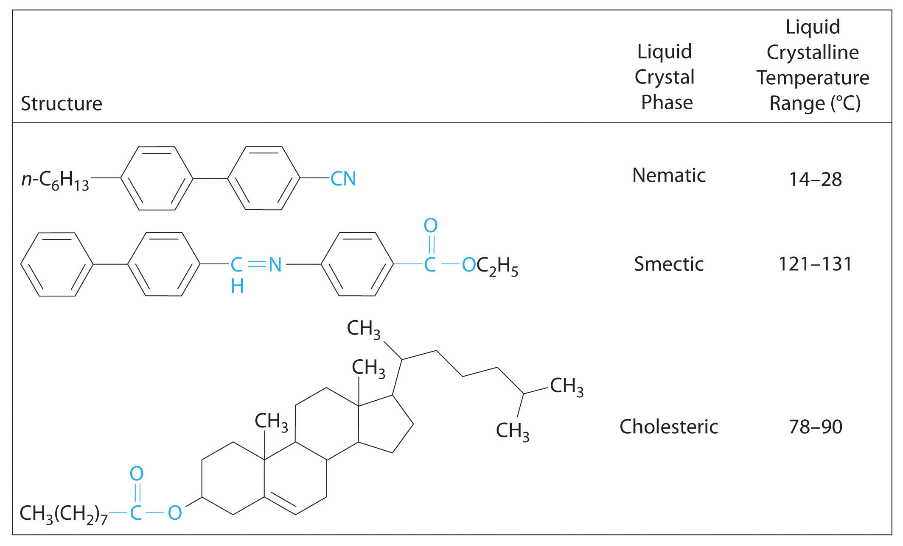
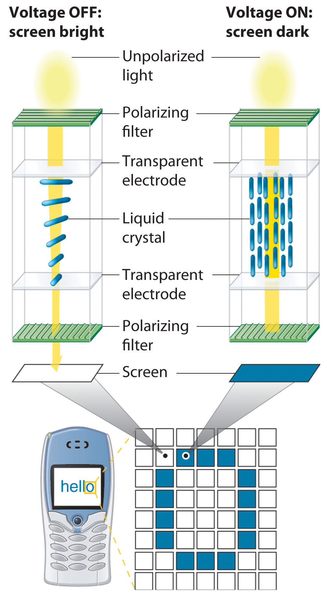
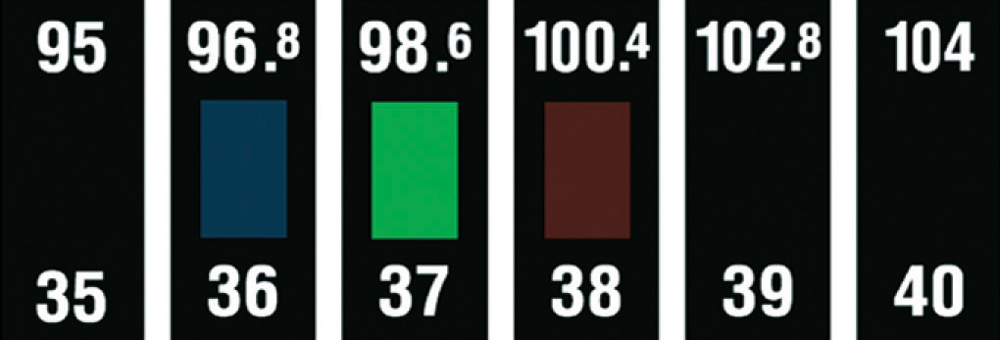

When cooled, most liquids undergo a simple phase transitionAnother name for a phase change. to an ordered crystalline solid, a relatively rigid substance that has a fixed shape and volume. (For more information on the characteristics of matter, see Chapter 1 "Introduction to Chemistry", Section 1.3 "A Description of Matter".) In the phase diagrams for these liquids, there are no regions between the liquid and solid phases. Thousands of substances are known, however, that exhibit one or more phases intermediate between the liquid state, in which the molecules are free to tumble and move past one another, and the solid state, in which the molecules or ions are rigidly locked into place. In these intermediate phases, the molecules have an ordered arrangement and yet can still flow like a liquid. Hence they are called liquid crystalsA substance that exhibits phases that have properties intermediate between those of a crystalline solid and a normal liquid and possess long-range molecular order but still flow., and their unusual properties have found a wide range of commercial applications. They are used, for example, in the liquid crystal displays (LCDs) in digital watches, calculators, and computer and video displays.
The first documented example of a liquid crystal was reported by the Austrian Frederick Reinitzer in 1888. Reinitzer was studying the properties of a cholesterol derivative, cholesteryl benzoate, and noticed that it behaved strangely as it melted. The white solid first formed a cloudy white liquid phase at 145°C, which reproducibly transformed into a clear liquid at 179°C (Figure 11.25 "Cholesteryl Benzoate"). The transitions were completely reversible: cooling molten cholesteryl benzoate below 179°C caused the clear liquid to revert to a milky one, which then crystallized at the melting point of 145°C.
Figure 11.25 Cholesteryl Benzoate

(a) When the temperature is greater than 179°C, the substance is an isotropic liquid through which images can be seen. (b) When the temperature is between 145°C and 179°C, the substance is in the cholesteric liquid crystalline phase and is an opaque, milky liquid.
In a normal liquid, the molecules possess enough thermal energy to overcome the intermolecular attractive forces and tumble freely. This arrangement of the molecules is described as isotropicThe arrangement of molecules that is equally disordered in all directions., which means that it is equally disordered in all directions. Liquid crystals, in contrast, are anisotropicAn arrangement of molecules in which their properties depend on the direction they are measured.: their properties depend on the direction in which they are viewed. Hence liquid crystals are not as disordered as a liquid because the molecules have some degree of alignment.
Most substances that exhibit the properties of liquid crystals consist of long, rigid rod- or disk-shaped molecules that are easily polarizable and can orient themselves in one of three different ways, as shown in Figure 11.26 "The Arrangement of Molecules in the Nematic, Smectic, and Cholesteric Liquid Crystal Phases". In the nematic phaseOne of three different ways that most liquid crystals can orient themselves. Only the long axes of the molecules are aligned, so they are free to rotate or to slide past one another., the molecules are not layered but are pointed in the same direction. As a result, the molecules are free to rotate or slide past one another. In the smectic phaseOne of three different ways that most liquid crystals can orient themselves. The long axes of the molecules are aligned (similar to the nematic phase), but the molecules are arranged in planes, too., the molecules maintain the general order of the nematic phase but are also aligned in layers. Several variants of the smectic phase are known, depending on the angle formed between the molecular axes and the planes of molecules. The simplest such structure is the so-called smectic A phase, in which the molecules can rotate about their long axes within a given plane, but they cannot readily slide past one another. In the cholesteric phaseOne of three different ways that most liquid crystals can orient themselves. The molecules are arranged in planes (similar to the smectic phase), but each layer is rotated by a certain amount with respect to those above and below it, giving it a helical structure., the molecules are directionally oriented and stacked in a helical pattern, with each layer rotated at a slight angle to the ones above and below it. As the degree of molecular ordering increases from the nematic phase to the cholesteric phase, the liquid becomes more opaque, although direct comparisons are somewhat difficult because most compounds form only one of these liquid crystal phases when the solid is melted or the liquid is cooled.
Figure 11.26 The Arrangement of Molecules in the Nematic, Smectic, and Cholesteric Liquid Crystal Phases

In the nematic phase, only the long axes of the molecules are parallel, and the ends are staggered at random intervals. In the smectic phase, the long axes of the molecules are parallel, and the molecules are also arranged in planes. Finally, in the cholesteric phase, the molecules are arranged in layers; each layer is rotated with respect to the ones above and below it to give a spiral structure. The molecular order increases from the nematic phase to the smectic phase to the cholesteric phase, and the phases become increasingly opaque.
Molecules that form liquid crystals tend to be rigid molecules with polar groups that exhibit relatively strong dipole–dipole or dipole–induced dipole interactions, hydrogen bonds, or some combination of both. Some examples of substances that form liquid crystals are listed in Figure 11.27 "Structures of Typical Molecules That Form Liquid Crystals*" along with their characteristic phase transition temperature ranges. In most cases, the intermolecular interactions are due to the presence of polar or polarizable groups. Aromatic rings and multiple bonds between carbon and nitrogen or oxygen are especially common. Moreover, many liquid crystals are composed of molecules with two similar halves connected by a unit having a multiple bond.
Figure 11.27 Structures of Typical Molecules That Form Liquid Crystals*
*Polar or polarizable groups are indicated in blue.
Because of their anisotropic structures, liquid crystals exhibit unusual optical and electrical properties. The intermolecular forces are rather weak and can be perturbed by an applied electric field. Because the molecules are polar, they interact with an electric field, which causes them to change their orientation slightly. Nematic liquid crystals, for example, tend to be relatively translucent, but many of them become opaque when an electric field is applied and the molecular orientation changes. This behavior is ideal for producing dark images on a light or an opalescent background, and it is used in the LCDs in digital watches; handheld calculators; flat-screen monitors; and car, ship, and aircraft instrumentation. Although each application differs in the details of its construction and operation, the basic principles are similar, as illustrated in Figure 11.28 "Schematic Drawing of an LCD Device, Showing the Various Layers".
Liquid crystals tend to form from long, rigid molecules with polar groups.
Figure 11.28 Schematic Drawing of an LCD Device, Showing the Various Layers
Applying a voltage to selected segments of the device will produce any of the numbers. The device is a sandwich that contains several very thin layers, consisting of (from top to bottom) a sheet of polarizer to produce polarized light, a transparent electrode, a thin layer of a liquid crystalline substance, a second transparent electrode, a second polarizer, and a screen. Applying an electrical voltage to the liquid crystal changes its orientation slightly, which rotates the plane of the polarized light and makes the area appear dark.
Changes in molecular orientation that are dependent on temperature result in an alteration of the wavelength of reflected light. Changes in reflected light produce a change in color, which can be customized by using either a single type of liquid crystalline material or mixtures. It is therefore possible to build a liquid crystal thermometer that indicates temperature by color (Figure 11.29 "An Inexpensive Fever Thermometer That Uses Liquid Crystals") and to use liquid crystals in heat-sensitive films to detect flaws in electronic board connections where overheating can occur.
Figure 11.29 An Inexpensive Fever Thermometer That Uses Liquid Crystals
Each section contains a liquid crystal sample with a different liquid crystalline range. The section whose liquid crystalline range corresponds to the temperature of the body becomes translucent (here shown in green), indicating the temperature.
We also see the effect of liquid crystals in nature. Iridescent green beetles, known as jewel beetles, change color because of the light-reflecting properties of the cells that make up their external skeletons, not because of light absorption from their pigment. The cells form helices with a structure like those found in cholesteric liquid crystals. When the pitch of the helix is close to the wavelength of visible light, the cells reflect light with wavelengths that lead to brilliant metallic colors. Because a color change occurs depending on a person’s angle of view, researchers in New Zealand are studying the beetles to develop a thin material that can be used as a currency security measure. The automobile industry is also interested in exploring such materials for use in paints that would change color at different viewing angles.
With only molecular structure as a guide, one cannot precisely predict which of the various liquid crystalline phases a given compound will actually form. One can, however, identify molecules containing the kinds of structural features that tend to result in liquid crystalline behavior, as demonstrated in Example 11.
Which molecule is most likely to form a liquid crystalline phase as the isotropic liquid is cooled?
p-azoxyanisole
Given: compounds
Asked for: liquid crystalline behavior
Strategy:
Determine which compounds have a rigid structure and contain polar groups. Those that do are likely to exhibit liquid crystal behavior.
Solution:
Exercise
Which compound is least likely to form a liquid crystal phase?

Answer: (b) Biphenyl; although it is rather long and rigid, it lacks any polar substituents.
Many substances exhibit phases that have properties intermediate between those of a crystalline solid and a normal liquid. These substances, which possess long-range molecular order but still flow like liquids, are called liquid crystals. Liquid crystals are typically long, rigid molecules that can interact strongly with one another; they do not have isotropic structures, which are completely disordered, but rather have anisotropic structures, which exhibit different properties when viewed from different directions. In the nematic phase, only the long axes of the molecules are aligned, whereas in the smectic phase, the long axes of the molecules are parallel and the molecules are arranged in planes. In the cholesteric phase, the molecules are arranged in planes, but each layer is rotated by a certain amount with respect to those above and below it, giving a helical structure.
Describe the common structural features of molecules that form liquid crystals. What kind of intermolecular interactions are most likely to result in a long-chain molecule that exhibits liquid crystalline behavior? Does an electrical field affect these interactions?
What is the difference between an isotropic liquid and an anisotropic liquid? Which is more anisotropic—a cholesteric liquid crystal or a nematic liquid crystal?